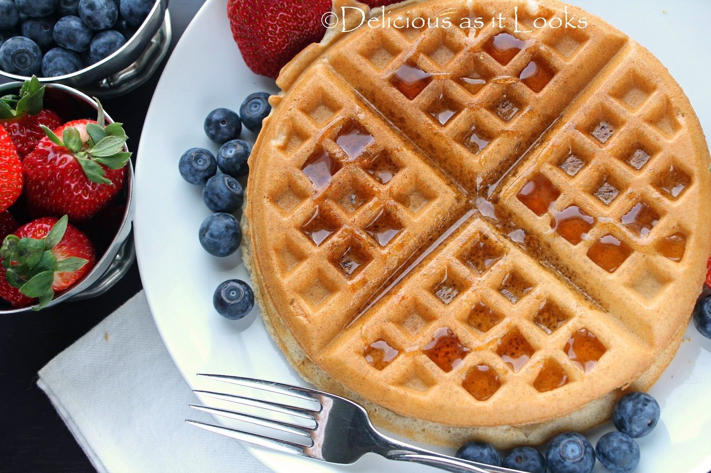

Breakfast Muffins
List of ingredients
All purpose flour
Ground nutmeg
Salt & Pepper
Baking Power & baking soda
Soy or Rice milk
Berries
Powdered sugar
Vegetable & Vanilla oil
Preparation
Heat the oven to 350°F and arrange a rack in the middle. Line a 12-well (1/2 cup) muffin pan with paper liners; set aside.
Sift the flour, baking powder, baking soda, nutmeg, and salt into a large bowl. Make a well in the center of the mixture; set aside.
In a medium, nonreactive bowl, whisk together the soy or rice milk, vinegar, and cornstarch until the cornstarch has dissolved. Pour this into the well in the flour mixture. Add the granulated sugar, oil, and vanilla and stir with a rubber spatula until combined (there will be a few lumps).
Fill each muffin well about three-quarters full. Using a spoon, create a small indentation in the batter by slightly spreading it from the middle out toward the edges. Measure 1 heaping teaspoon of jam or preserves and place the back of the teaspoon inside the indentation. Rotate the spoon, letting the jam slide into the indentation. Repeat in each well.
Bake until the tops of the muffins are firm, about 21 to 23 minutes. Set the pan on a wire rack and let cool for 5 minutes. Remove the muffins from the pan and let cool completely on the wire rack. Dust with powdered sugar before serving.
Waffles
List of ingredients
Whole wheat flour
Ground allspice
Salt
Cooking oats
Pure maple syrup
Canola oil
Frozen Blueberries
Unsweetened Applesauce
Preparation
Sift flour, baking powder, salt and allspice into a mixing bowl. Mix in the oats. Make a well in the center and add applesauce, milk, maple syrup, oil and vanilla. Stir with just until combined.
Let batter rest for 5 minutes or so, it will thicken a bit. Fold in the blueberries. Don’t worry too much about the blueberries bleeding into the batter, it’s no biggie.
Cook in waffle iron according to manufacturer directions. In my 8 inch waffle iron, I use a heaping 1/2 cup of batter. Remember to spray or brush the iron with oil in between each waffle.

Flapjack
List of ingredients
Porridge Oats
Dairy free spread
Brown sugar
Golden syrup
Preparation
Melt the dairy-free spread in a saucepan, stir in the rest of the ingredients, then press firmly into an 8" square tin.
Bake in the oven at 180C for about 15 minutes, or until the edges are turning brown.
Score gently, then leave to cool.